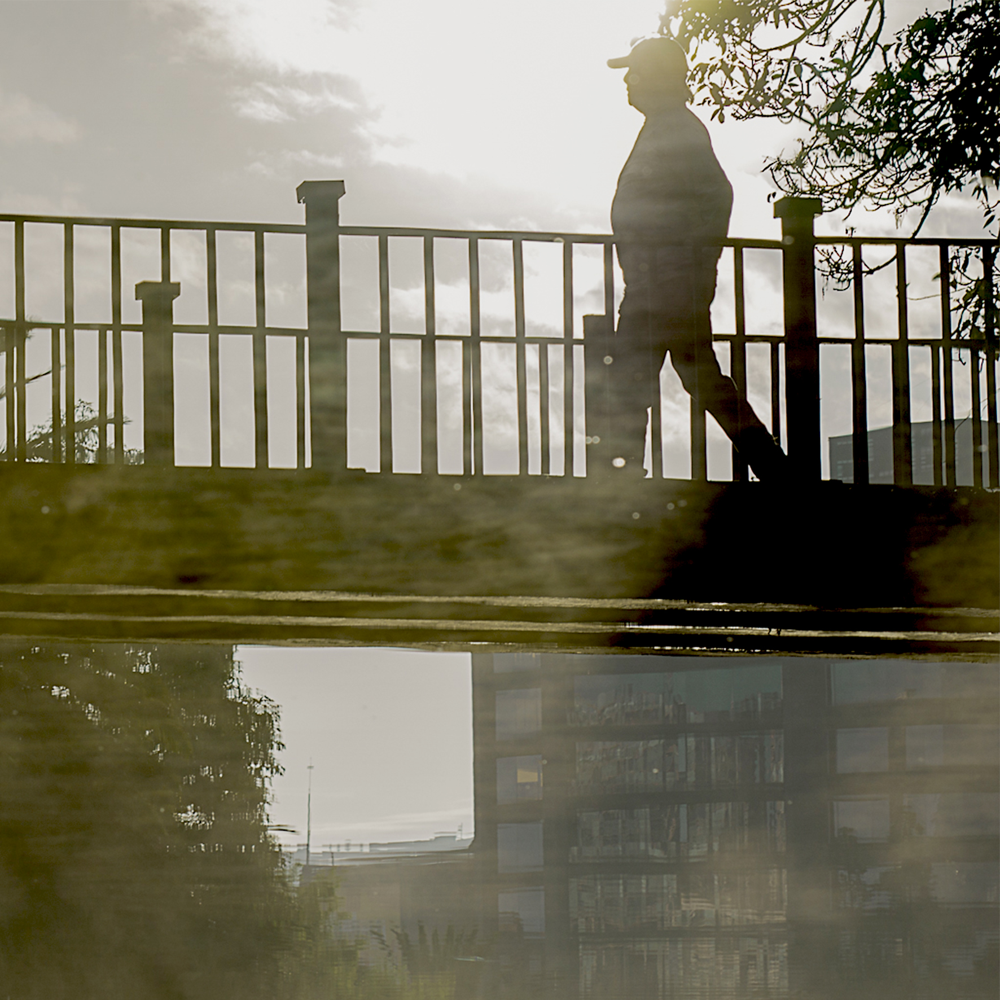

00Portada — por definir— Capítulo Ecuador —
Llegué a Ecuador sin saber que cruzar ese “puente aéreo” se convertiría en un camino que, con cada día que pasa, pareciera ir borrando el camino de retorno. Esto es lo que queda después de mirar un lugar el tiempo suficiente para dejar de ser turista y todavía no ser de aquí del todo. Es algo raro. Me podría auto denominar: El extranjero de aquí, o el local que vino de allá.
Es en muchos casos, encontrar grandes amistades en personas que hasta ayer no habías visto, que jamás transitaron: tu infancia, adolescencia y mucho de tu vida adulta. Aun así. Ahora les llamo amigos y guardo por ellos un afecto inmenso. Es como si sucediera un proceso de transitividad de derechos de aquellos amigos de larga data, de toda la vida, pero sin que ninguno perdiera absolutamente nada. Ni los antiguos, ni los nuevos.
Cada díptico de este libro junta dos imágenes que no pedí que se parecieran — se encontraron solas, como se encuentran las cosas que uno vive sin planearlas. Hay procesiones y hay ternura, hay mercado y hay niebla, hay ciudad y hay volcán, hay fe, tierra, voluntad, identidad… Hay mucho, mucho de aquello que no se compra con dinero.
Ecuador jamás me eligió. Yo tampoco lo elegí… Nos encontramos y nos hemos abrazado con total honestidad.
¡Vaya esto, dedicado a mis viejos amigos, y a mis nuevos viejos amigos!
— Pedro Luis González Berroterán
Un guayaquiteño de Venezuela, con panza manabita.
Para consultas sobre este proyecto:
plgonzalezb@gmail.com · www.theimagee.com
Me exijo ser extranjero de donde no estoy y nacional de la tierra que estoy pisando. Voy curtiendo la piel sin perder mi origen; voy sumando capas a la vida. — Pedro.